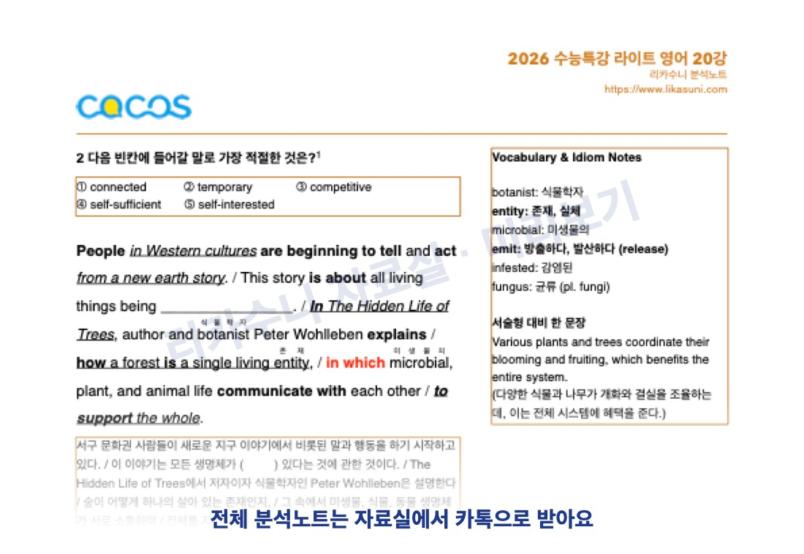

안녕하세요, 이매동 코코스학원 리카수니 원장입니다.
학생 요청으로 2026 수능특강 라이트(Light) 영어 20강 2번 분석노트를 만들었어요.
지문은 교재에 있으니 교재를 펴 놓고 함께 보세요.
· 교재: 2026 수능특강 라이트 영어 (EBS)
· 위치: 20강 2번 (빈칸 추론)
· 정답: ① (모든 생명체가 '연결되어' 있다)
서구 문화권에서 새로운 '지구 이야기'가 퍼지고 있는데, 그 핵심은 모든 생명체가 서로 이어져 있다는 거예요.
숲은 하나의 살아 있는 존재처럼 미생물·식물·동물이 서로 소통하며 전체를 지탱한다는 흐름이에요.
근거 1: 빈칸 바로 뒤, 숲을 '하나의 살아 있는 존재'로 설명하며 생명체들이 서로 소통한다고 해요.
근거 2: 병든 나무를 주변 나무가 뿌리로 돕고, 뿌리와 균류의 거대한 지하 네트워크가 숲을 지탱한다고 해요.
→ 서로 소통하고 돕는 '연결'이 빈칸에 들어가요.
② 일시적인 → 시간의 길이 이야기는 없어요.
③ 경쟁적인 → 글은 경쟁이 아니라 서로 돕는 모습이에요.
④ 자족적인 → 혼자서 해결한다는 뜻이라 '서로 돕는다'와 반대예요.
⑤ 이기적인 → 역시 '전체를 지탱한다'와 반대예요.

1) all living things being ~
→ 동명사의 의미상 주어: '모든 생명체가 ~인 것'
2) 전치사 + 관계대명사 (in which): '그 속에서 ~하는'
3) 목적의 to부정사 / 주어가 단수(network)라 동사는 supports
· botanist 식물학자
· entity 존재, 실체
· microbial 미생물의
· emit 방출하다, 발산하다 (= release)
· infested 감염된
· fungus 균류 (복수 fungi)
분석노트 PDF 에 '서술형 대비 한 문장'(계속적 용법 which 문장)과 해석을 정리해 두었어요.
끊어 읽기·해석·구문이 정리된 PDF 는 리카수니 자료실에서 카카오 로그인 후 카톡으로 받을 수 있어요.
수능특강 라이트 다른 강·번호도 요청할 수 있어요.
▶ 분석노트 요청하기 (리카수니 자료실)
https://data.likasuni.com/notes/#note-req
※ 지문 출처: 한국교육방송공사(EBS) 2026 수능특강 라이트 영어. 지문·선택지 원문과 전체 해석은 싣지 않았어요.
분당 이매동 코코스학원은 초등·중등·고등 영어와 수학을 가르쳐요.
수능특강·모의고사·내신 대비가 궁금하시면 편하게 문의해 주세요.
· 홈페이지: https://www.cocosedu.co.kr/
· 주소: 경기 성남시 분당구 판교로 476 2층